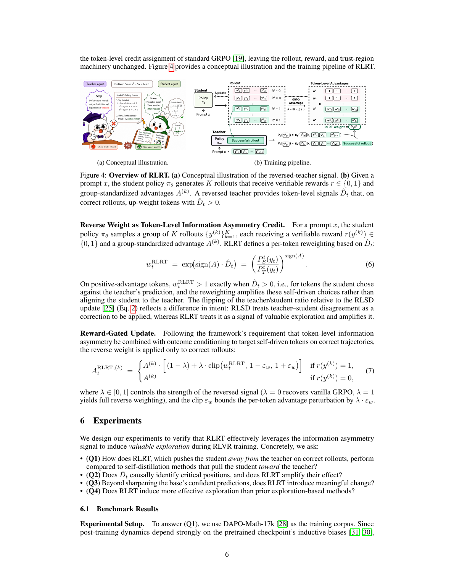
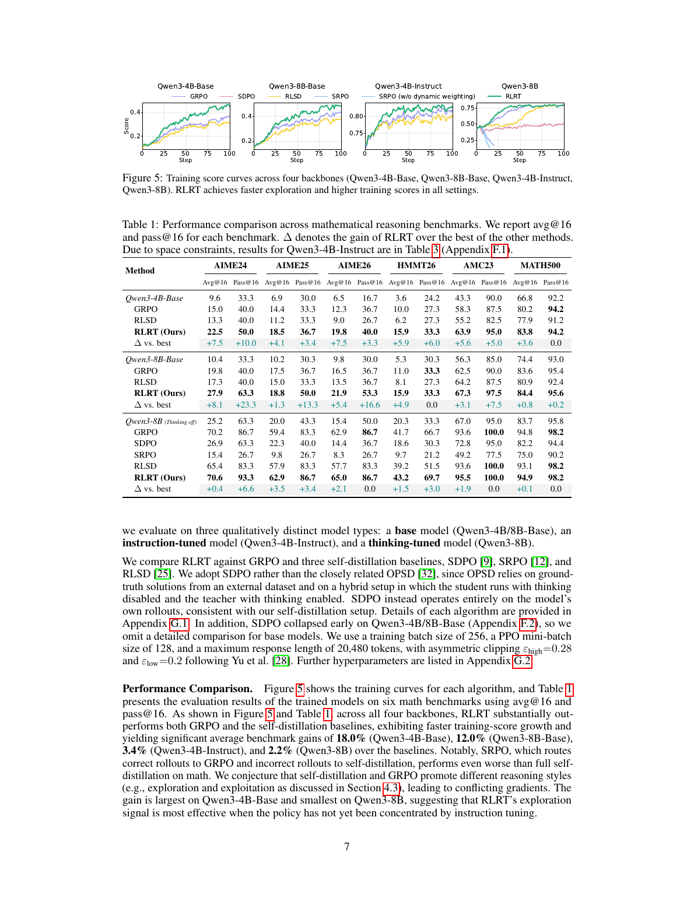
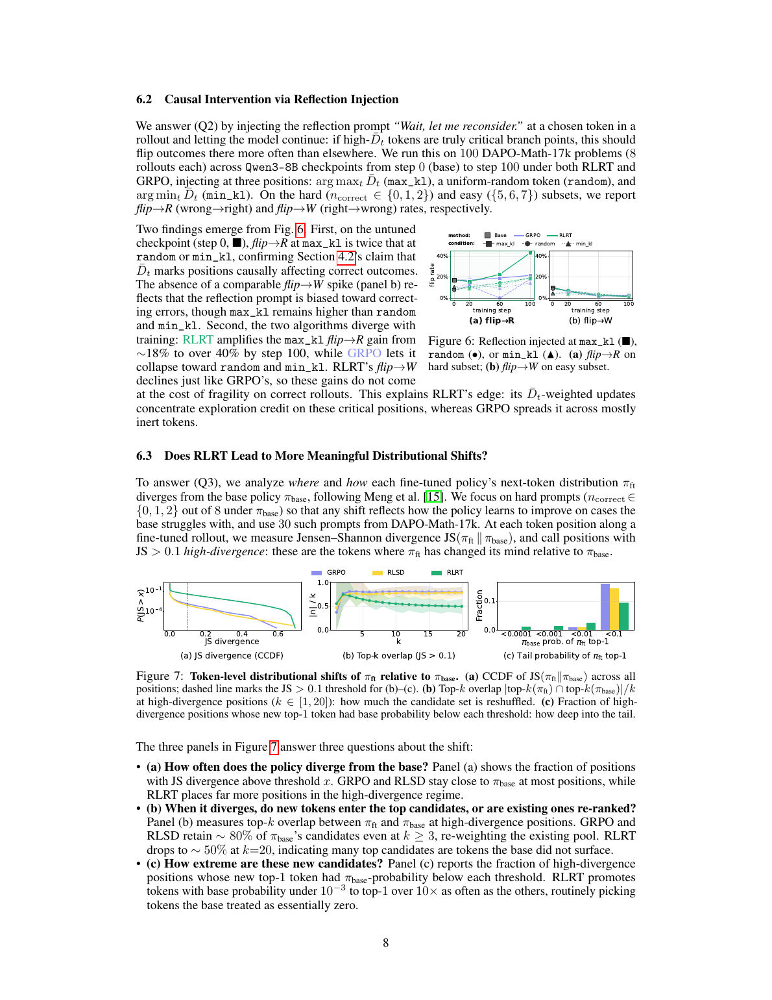
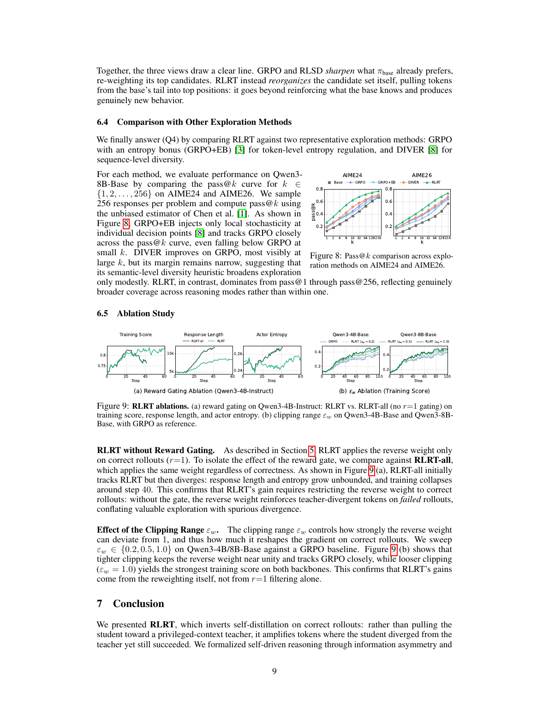
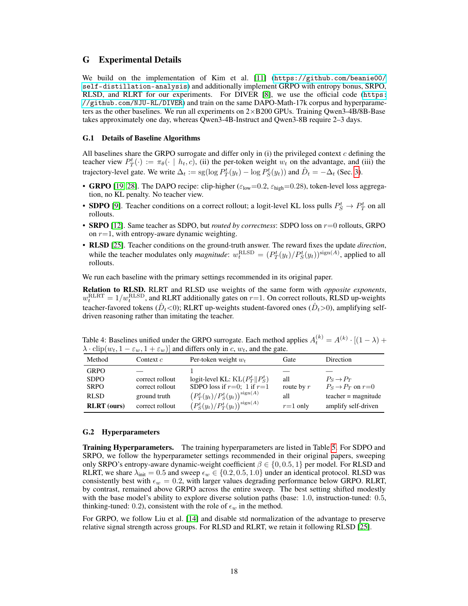
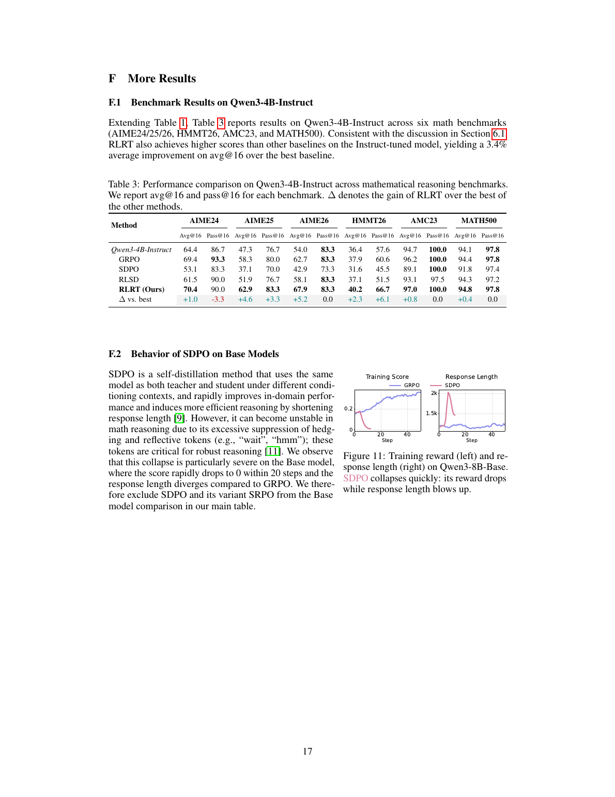

这份报告不是聊天记录整理，而是围绕论文问题、方法、实验和边界重写的一份自解释阅读材料。
论文真正要解决的问题：RLVR 的稀疏奖励与 self-distillation 的方向歧义
RLVR 用可验证奖励训练 reasoning model：答案对就给 1，答案错就给 0。它的优势是 reward 可靠，缺点是 reward 太稀疏。 一条数学推理可能有几千个 token，训练信号却只有最后一个标量，模型不知道中间哪些 token 真正导致了成功或失败。
RLVR 的瓶颈
Verifier 只能告诉模型“这条完整轨迹对不对”，不能告诉它第 37 步的转折、第 112 个 token 的假设或某个反思词是否关键。这就是 credit assignment bottleneck。
self-distillation 的补救
让同一模型扮演 student 和 teacher。student 只看普通上下文；teacher 额外看到正确解、成功 rollout 或反馈。teacher 分布提供 token-level dense signal。
本文指出的漏洞
如果 student 已经答对，继续逼它模仿 teacher，可能会覆盖 student 自己找到的有效路径。teacher signal 在成功轨迹上不一定是 correction。
RLRT 如何一步一步工作
RLRT 的名字是 RLVR with Reversed Teacher。它不重写 GRPO 的 rollout、reward、trust-region 机制，只改变每个 token 的 advantage 权重。
1. 对每个 prompt 采样一组 rollout
给定数学题 prompt \(x\)，当前 policy \(\pi_\theta\) 生成 \(K\) 条候选解答 \(y^{(1)},\ldots,y^{(K)}\)。论文实验中 rollout 数为 8。
2. 用 verifier 得到二元 reward
每条 rollout 得到 \(r(y)\in\{0,1\}\)：答案可验证正确则为 1，否则为 0。组内再计算 group-standardized advantage \(A^{(k)}\)。
3. 构造同一模型的两个条件化视图
student 只看当前 prefix \(h_t=(x,y_{<t})\)；teacher 额外看 privileged context \(c\)，例如成功 rollout 或正确解法。
4. 在正确 rollout 上计算反向 teacher 权重
如果某个 token 是 student 更偏好、teacher 不太偏好的，并且完整 rollout 已被 verifier 证明是正确的，RLRT 会放大这个 token 的训练信号。
5. 错误 rollout 回退到 vanilla GRPO
RLRT 的 reverse weight 只用于 \(r=1\) 的正确轨迹。错误轨迹不做反向 teacher 强化，因为那会把无效分歧也当作探索。

最关键的公式：把 teacher/student 概率比反过来读
在第 \(t\) 个 token 位置，student 与 teacher 的 next-token 分布分别为：
论文定义 token-level information asymmetry：
Explore \(\hat{D}_t > 0\)
这个 token 是 student 更偏好的，teacher 不太会预测。若完整 rollout 正确，它代表“student 违背 teacher 但成功”的选择。
Exploit \(\hat{D}_t < 0\)
这个 token 是 teacher 更偏好的，student 原本不太倾向。强化它相当于沿着 teacher 的标准路径收束。
RLRT 的 reverse weight 是：
在正 advantage 的正确 rollout 上，若 \(P_S^t(y_t) > P_T^t(y_t)\)，则 \(w_t^{\mathrm{RLRT}} > 1\)，这个 token 的梯度被放大。
为什么必须 reward-gated？如果错误 rollout 上也强化 student 偏离 teacher 的 token，就会把“错误中的随意偏离”误当成探索。论文消融显示，去掉 gate 的 RLRT-all 会让 response length 和 entropy 失控，并在约 step 40 训练崩掉。
到底评估的是什么
| 维度 | 论文设置 | 如何理解 |
|---|---|---|
| 任务类型 | 数学推理 RLVR | 模型输入数学题，输出完整文本推理和最终答案；最终答案由 verifier 判定。 |
| 训练集 | DAPO-Math-17k | 用于 RLVR rollout 和训练，不是开放域对话任务。 |
| 模型 | Qwen3-4B/8B-Base、Qwen3-4B-Instruct、Qwen3-8B | 覆盖 base、instruction-tuned、thinking-tuned 三类不同 inductive bias。 |
| 测试集 | AIME24/25/26、HMMT26、AMC23、MATH500 | AIME/HMMT 更能体现难题推理；MATH500 和 AMC23 更容易出现接近饱和。 |
| 指标 avg@16 | 16 次采样的平均正确性 | 更看重模型每次生成是否稳定答对。 |
| 指标 pass@16 / pass@k | 多次采样中至少一次答对 | 更看重模型是否覆盖到正确路径，适合观察 exploration coverage。 |
常见误解：这不是聊天 benchmark，也不是评估模型是否能解释自己的 reasoning style。它评估的是数学题上通过文本生成得到可验证正确答案的能力。
主结果：base model 上收益最大，强 thinking model 上收益变小但仍一致
论文报告 RLRT 在四个 backbone 上都超过 GRPO 和 self-distillation baseline。平均 benchmark gain： Qwen3-4B-Base +18.0%，Qwen3-8B-Base +12.0%，Qwen3-4B-Instruct +3.4%，Qwen3-8B +2.2%。
| Backbone | 代表性提升 | 解读 |
|---|---|---|
| Qwen3-4B-Base | AIME24 avg@16: 15.0 → 22.5 AIME26 avg@16: 12.3 → 19.8 |
base policy 还没有被 instruction/thinking tuning 强烈收窄，RLRT 更容易释放未被强化的探索路径。 |
| Qwen3-8B-Base | AIME24 pass@16: 40.0 → 63.3 AIME26 pass@16: 36.7 → 53.3 |
pass 指标大幅提升，说明它不只是提高置信度，也可能扩大可采样正确路径覆盖面。 |
| Qwen3-4B-Instruct | AIME25 avg@16: 58.3 → 62.9 HMMT26 pass@16: 60.6 → 66.7 |
仍有提升，但部分 pass@16 已接近上限或不完全领先，说明收益主要在平均稳定性上。 |
| Qwen3-8B thinking-tuned | 平均 gain +2.2% | 强模型已有成熟推理路径，RLRT 的边际空间自然变小；这个趋势反而支持论文机制解释。 |

机制证据 1：高 \(\bar{D}_t\) 位置确实像关键分岔点
论文做了 causal intervention：在 rollout 的 max_kl、random、min_kl 位置插入 “Wait, let me reconsider.”，再让模型继续生成。如果 \(\bar{D}_t\) 真能识别关键位置，那么 max_kl 插入应更容易翻转结果。结果显示，untuned checkpoint 上 max_kl 的 wrong-to-right flip rate 约为 random/min_kl 的两倍；RLRT 训练到 step 100 后会把这个 gain 从约 18% 放大到超过 40%。
机制证据 2：RLRT 真正重组 token 候选集
作者比较 fine-tuned policy 与 base policy 的 next-token distribution。GRPO 和 RLSD 多数时候只是重排 base 已经偏好的候选 token；RLRT 在 high-divergence 位置把更多 base 原本概率很低的 token 拉到 top candidate。论文报告：RLRT 将 base 概率低于 \(10^{-3}\) 的 token 提到 top-1 的频率超过其他方法 10 倍。

和其他 exploration 方法的比较
GRPO+entropy bonus 只是在 token 局部增加随机性，不知道哪种随机性有价值；DIVER 鼓励 sequence-level diversity，但仍可能停留在表面路径差异。RLRT 先用 verifier 过滤成功轨迹，再用 teacher-student gap 定位成功中的自主偏离，所以它的 diversity 是 outcome-grounded、token-localized 的。

RLRT、RLSD、SDPO、SRPO 的差别
| 方法 | Teacher context | 更新方向 | 问题或贡献 |
|---|---|---|---|
| GRPO | 无 teacher view | 只依赖 group-relative advantage | 简单稳定，但 token-level credit assignment 粗。 |
| SDPO | correct rollout | 用 KL 把 student 拉向 teacher | 在数学 base model 上会抑制反思/hedging token，论文观察到 reward 掉到 0、长度发散。 |
| SRPO | correct rollout | 错误 rollout 做 self-distillation，正确 rollout 做 GRPO | routing 思路合理，但论文中 math 结果甚至差于 full self-distillation，可能存在梯度风格冲突。 |
| RLSD | ground truth answer | teacher-student ratio 作为 magnitude | 正确 rollout 上强化 teacher-favored token，仍偏向 imitation。 |
| RLRT | correct rollout | 反向强化 student-favored token，仅限 \(r=1\) | 把成功轨迹中的 disagreement 解释为 self-driven reasoning，形成 valuable exploration。 |

局限与失败模式
1. 依赖可验证 reward
数学题可以给可靠二元 reward；开放式写作、agent 任务、长程代码任务的 reward 更噪，错误轨迹上反向强化的风险会明显增加。
2. teacher 近似并不完美
理论中 teacher 被视作 conditioned on success；实际 teacher 只是看到某种 privileged context，这不等于真正的成功条件分布。
3. token signal 可能混入风格
“wait / hmm / consider” 和 reasoning 有相关性，但不一定总是因果关键。论文的 intervention 缓解这个担忧，但不能证明所有被强化 token 都是因果步骤。
4. 强模型上的边际收益有限
Qwen3-8B thinking-tuned 的 gain 明显小于 base model。RLRT 更像释放 base policy 中未被放大的路径，而不是保证强 reasoner 大幅跃迁。

我的判断：它的新意在“信号语义反转”，不是复杂优化技巧
这篇论文最有价值的地方，是把 self-distillation 里一直存在的 teacher-student gap 做了语义重解释： gap 不天然代表 teacher 更正确，gap 的含义取决于 rollout outcome。
我认为这是一个强 insight：失败轨迹上的 disagreement 可以当 correction；正确轨迹上的 disagreement 可以当 exploration evidence。这个区分简单、可实现，并且和实验结果的趋势一致。
工程上，RLRT 的吸引力在于侵入性低。已有 GRPO/RLVR pipeline 不需要重写 rollout 或 verifier，只需要额外计算 teacher-conditioned logprob，并在正确 rollout 上对 token advantage 做 clipped reweighting。代价是额外 forward/logprob 计算和 privileged context 构造。
研究上，它提供了一个新的 RLVR 设计轴：过去很多工作调 reward、clip、entropy、sequence diversity；这篇论文说，teacher 条件信息本身可以作为探索方向选择器。这比“盲目增加多样性”更精确，因为它先被 outcome 过滤，再在 token 层定位分歧。
下一步最自然的方向不是无脑反 teacher，而是 adaptive routing：失败 rollout 用 teacher-guided correction，正确 rollout 用 reversed-teacher exploration；当 reward 噪声高、teacher context 弱、或者模型已经很强时，再动态降低 reverse weight。这个方向可能比单独押注 imitation 或 rebellion 更稳。
如果要复现或迁移，优先检查这些点
先从数学 RLVR 复现
不要一开始迁移到开放域 reward。RLRT 最依赖的是正确 rollout 的可信 gate，数学 verifier 最适合先验证。
监控 entropy 和长度
如果 response length 和 actor entropy 同时失控，优先怀疑 reward gate、weight clipping 或 teacher context 构造有问题。
看 pass@k 而不只 avg
RLRT 的核心 claim 是 exploration coverage，所以 pass@k 曲线和 distributional shift 比单点 avg 更能说明问题。
证据边界与资料索引
权威来源
主来源为 arXiv HTML 与 PDF：arXiv HTML、arXiv PDF。论文题名、作者和页数与 arXiv 元数据一致。
核对范围
正文重点核对算法公式、实验设置、主表、附录超参和限制段落；页面图只作为表格和曲线证据，不作为装饰。
身份结论：论文题名、作者、arXiv ID、PDF 元数据一致。本文分析对象是 2026-05-11 发布的 2605.10781v1。